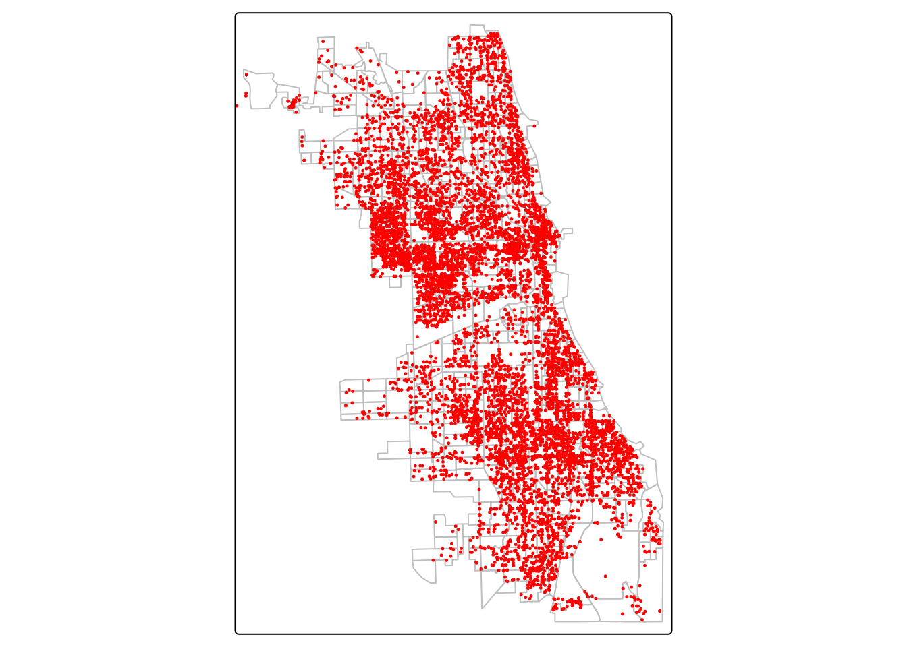
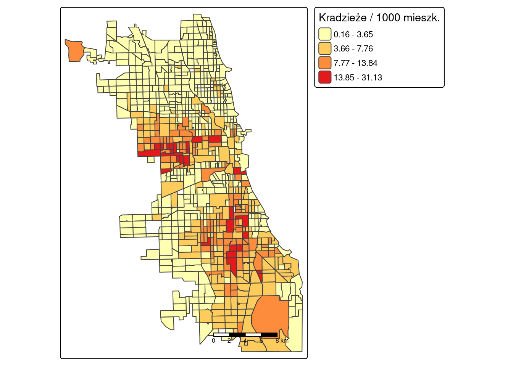
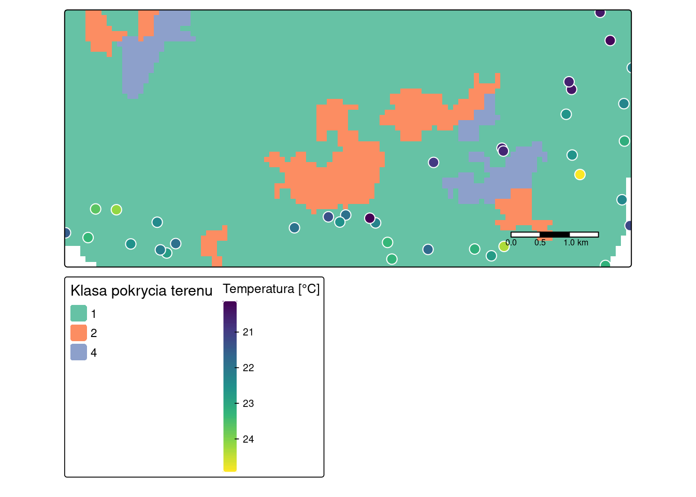

library(sf)
library(terra)
library(tmap)
library(dplyr)1 Dane przestrzenne w R
Czego się nauczysz
Po tym rozdziale potrafisz wykonać w R:
- wczytać dane przestrzenne (wektorowe, rastrowe) oraz tabelę z pliku tekstowego,
- dołączyć dane atrybutowe do warstwy przestrzennej po wspólnym identyfikatorze i sprawdzić, czy złączenie się udało,
- sprawdzić i ujednolicić układy współrzędnych dwóch warstw,
- wykonać selekcję obiektów na podstawie lokalizacji,
- zliczyć punkty w poligonach i przeliczyć je na liczbę mieszkańców,
- zamienić tabelę ze współrzędnymi na obiekt przestrzenny,
- przyciąć raster do zasięgu innej warstwy,
- stworzyć mapę w pakiecie
tmapi zapisać wyniki do pliku.
Rozumiesz i umiesz zinterpretować:
- strukturę obiektu klasy
sforaz klasySpatRaster, - znaczenie poszczególnych pól nagłówka tych obiektów,
- różnicę między układem współrzędnych geograficznych a odwzorowanym i jej praktyczne skutki,
- objawy nieudanego złączenia danych atrybutowych z warstwą przestrzenną,
- dlaczego współczynnik na mieszkańca wymaga sprawdzenia mianownika.
Do doczytania w razie potrzeby: Załącznik C — tworzenie obiektów wektorowych od zera, strefy buforowe, centroidy, tworzenie siatek, zmiana rozdzielczości rastra, dalsze elementy kompozycji mapy.
Teoria: Najważniejsze informacje. Pakiety: Załącznik A. Funkcje: Załącznik B.
1.1 Wprowadzenie
R jest językiem programowania oraz środowiskiem obliczeniowym pozwalającym na analizę statystyczną i wizualizację danych. Dostarcza także wielu funkcji do pracy z danymi przestrzennymi — i to one są przedmiotem tego rozdziału.
Statystykę opisową, przetwarzanie tabel i tworzenie wykresów w R już znasz. Nowe jest to, że dane mają teraz lokalizację: każdy wiersz tabeli odnosi się do konkretnego miejsca na powierzchni Ziemi, opisanego współrzędnymi w określonym układzie współrzędnych. Wynikają z tego trzy właściwości, których dane nieprzestrzenne nie miały:
- obiekt przestrzenny to tabela z dodatkową kolumną geometrii, a kolumna ta podlega innym regułom niż pozostałe,
- każda warstwa ma układ współrzędnych, a operacje łączące dwie warstwy wymagają, aby był on taki sam,
- dane mogą być zapisane w dwóch modelach — wektorowym (punkty, linie, poligony) oraz rastrowym (siatka komórek) — obsługiwanych przez różne pakiety.
Rozdział pokazuje pełną ścieżkę od surowych plików do danych gotowych do analizy. Przykład 1 prowadzi przez tę ścieżkę krok po kroku i kończy się zapisaniem pliku, który będzie punktem wyjścia w Rozdział 2. Przykład 2 dotyczy danych rastrowych.
Szersze omówienie pracy z danymi przestrzennymi w R zawiera podręcznik Lovelace, Nowosad, i Muenchow (2025), dostępny także w otwartej wersji internetowej pod adresem https://r.geocompx.org/.
1.2 Pakiety i klasy obiektów przestrzennych
Funkcje do pracy z danymi przestrzennymi zawarte są w pakietach:
- obsługa danych przestrzennych: sf (dane wektorowe), terra (dane rastrowe i wektorowe)
- wizualizacja danych przestrzennych: tmap
- statystyka przestrzenna:
- statystyka punktów: spatstat, sfdep
- dane obszarowe: spdep, sfdep
- geostatystyka: gstat
W tym rozdziale wykorzystujemy trzy pakiety: sf (dane wektorowe), terra (dane rastrowe) oraz tmap (wizualizacja), a do przetwarzania tabel atrybutów — znany już dplyr. Opis każdego z pakietów, odnośniki do dokumentacji oraz instrukcję instalacji zawiera Załącznik A.
Każdy model danych ma w R własną klasę obiektów:
| Model danych | Pakiet | Klasa obiektu |
|---|---|---|
| wektorowy | sf |
sf |
| wektorowy | terra |
SpatVector |
| rastrowy | terra |
SpatRaster |
Większość funkcji pakietu sf zaczyna się od prefiksu st_ (od spatial type). Pozwala to odnaleźć właściwą funkcję bez przeszukiwania dokumentacji: po wpisaniu st_ w konsoli RStudio i naciśnięciu klawisza Tab wyświetlana jest lista wszystkich dostępnych funkcji.
1.3 Struktura obiektów przestrzennych
Przed przystąpieniem do analizy należy ustalić, co dokładnie zostało wczytane do R. Służy do tego wypisanie obiektu w konsoli — nagłówek zawiera wszystkie informacje potrzebne do zaplanowania dalszego przetwarzania.
1.3.1 Obiekt klasy sf
Obiekt klasy sf składa się z dwóch części: ramki danych z atrybutami oraz kolumny geometrii przechowującej współrzędne (najczęściej nosi ona nazwę geometry lub geom). Dzięki temu na obiekcie sf działają funkcje przeznaczone do pracy z tabelami, a geometria pozostaje powiązana z wierszami.
granice = read_sf("data/cook_granice.gpkg", layer = "obszary_spisowe")
graniceSimple feature collection with 1332 features and 1 field (with 1 geometry empty)
Geometry type: MULTIPOLYGON
Dimension: XY
Bounding box: xmin: -88.26364 ymin: 41.46971 xmax: -87.52416 ymax: 42.15426
Geodetic CRS: NAD83
# A tibble: 1,332 × 2
GEOID geom
<chr> <MULTIPOLYGON [°]>
1 17031822400 (((-87.79876 41.72298, -87.79836 41.72289, -87.79732 41.72062, -…
2 17031740100 (((-87.70137 41.70708, -87.69645 41.70715, -87.69641 41.70626, -…
3 17031530501 (((-87.64191 41.67782, -87.6395 41.67784, -87.6383 41.67785, -87…
4 17031830300 (((-87.6934 41.4845, -87.69202 41.48472, -87.68406 41.48465, -87…
5 17031750300 (((-87.6912 41.69899, -87.68807 41.69902, -87.68754 41.69903, -8…
6 17031826303 (((-87.59781 41.62256, -87.59653 41.62257, -87.59486 41.62258, -…
7 17031826500 (((-87.63427 41.62618, -87.63397 41.62672, -87.63231 41.62984, -…
8 17031827801 (((-87.61707 41.61672, -87.61351 41.61447, -87.61384 41.60829, -…
9 17031825900 (((-87.54895 41.61641, -87.54905 41.62271, -87.54904 41.62729, -…
10 17031822601 (((-87.76741 41.71227, -87.76741 41.71242, -87.76676 41.7123, -8…
# ℹ 1,322 more rowsNagłówek wypisanego obiektu podaje:
| Pole nagłówka | Znaczenie |
|---|---|
Simple feature collection with 1332 features and 1 field |
liczba obiektów (wierszy) oraz liczba kolumn atrybutów; kolumna geometrii nie jest liczona jako atrybut |
(with 1 geometry empty) |
ostrzeżenie: jeden obiekt nie ma przypisanej geometrii |
Geometry type: MULTIPOLYGON |
typ geometrii obiektów w warstwie |
Dimension: XY |
liczba wymiarów współrzędnych (XY, XYZ dla danych z wysokością, XYM z wartością dodatkową) |
Bounding box |
obwiednia, czyli prostokąt obejmujący wszystkie obiekty warstwy |
Geodetic CRS: NAD83 |
układ współrzędnych |
Typ geometrii określa, z jakich obiektów zbudowana jest warstwa. Podstawowe typy to POINT, LINESTRING oraz POLYGON; ich odpowiedniki z przedrostkiem MULTI (MULTIPOINT, MULTILINESTRING, MULTIPOLYGON) oznaczają, że jeden obiekt może składać się z kilku rozłącznych części.
Dwa pola tego nagłówka wymagają komentarza.
Geodetic CRS kontra Projected CRS. Pierwsze oznacza układ współrzędnych geograficznych — współrzędne wyrażone są w stopniach szerokości i długości geograficznej. Widać to w obwiedni: wartości mieszczą się między −88 i −87 oraz między 41 i 42. Drugie oznacza układ odwzorowany, w którym współrzędne wyrażone są w jednostkach długości, najczęściej w metrach (patrz Przykład 2). Różnica ma praktyczne skutki: w układzie odwzorowanym odległości i pola powierzchni otrzymujemy bezpośrednio w metrach, a w układzie geograficznym wymagają obliczeń na elipsoidzie albo wcześniejszego przekształcenia układu.
(with 1 geometry empty). Jeden z 1332 obszarów spisowych nie ma przypisanej geometrii.
granice |>
filter(st_is_empty(granice)) |>
st_drop_geometry()# A tibble: 1 × 1
GEOID
* <chr>
1 17031990000Jest to obszar spisowy o identyfikatorze 17031990000, obejmujący powierzchnię wody, bez ludności i bez danych. Obiekty z pustą geometrią nie przecinają się z niczym, więc wypadną samodzielnie przy selekcji przestrzennej w kroku 5. Warto jednak zauważyć taki komunikat od razu — gdyby pustych geometrii było więcej, oznaczałoby to problem z plikiem źródłowym.
1.3.2 Obiekt klasy SpatRaster
Dane rastrowe obsługuje pakiet terra, a klasa SpatRaster reprezentuje je jako siatkę komórek o jednakowej wielkości. Każda komórka przechowuje jedną wartość na warstwę.
srtm = rast("data/srtm.tif")
srtmclass : SpatRaster
size : 96, 127, 1 (nrow, ncol, nlyr)
resolution : 90, 90 (x, y)
extent : 745541.7, 756971.7, 712616.2, 721256.2 (xmin, xmax, ymin, ymax)
coord. ref. : ETRF2000-PL / CS92 (EPSG:2180)
source : srtm.tif
name : srtm Nagłówek obiektu SpatRaster podaje:
| Pole nagłówka | Znaczenie |
|---|---|
dimensions |
liczba wierszy, kolumn oraz warstw (nrow, ncol, nlyr) |
resolution |
rozdzielczość, czyli wielkość komórki w jednostkach układu współrzędnych |
extent |
zasięg warstwy (xmin, xmax, ymin, ymax) |
coord. ref. |
układ współrzędnych |
source |
nazwa pliku, z którego dane zostały wczytane |
name |
nazwa warstwy (przy rastrach wielowarstwowych — nazwy wszystkich warstw) |
min value, max value |
zakres wartości w warstwie |
Trzy z tych pól są ze sobą powiązane: zasięg podzielony przez rozdzielczość daje wymiary. Dla warstwy srtm zasięg w kierunku poziomym wynosi 11 430 m, a rozdzielczość 90 m, co daje 127 kolumn. Zapamiętanie tej zależności pozwala przewidzieć, co się stanie przy przycinaniu rastra i przy zmianie jego rozdzielczości.
Raster może zawierać wiele warstw. Plik siatka-all.tif jest przykładem takiego zbioru:
siatka_all = rast("data/siatka-all.tif")
nlyr(siatka_all)[1] 5names(siatka_all)[1] "siatka-all_1" "siatka-all_2" "siatka-all_3" "siatka-all_4" "siatka-all_5"1.4 Praca z danymi przestrzennymi w R
Czynności wykorzystywane w tym rozdziale:
| Czynność | Funkcja |
|---|---|
| wczytanie tabeli z pliku tekstowego | read.csv() |
| wczytanie danych wektorowych | sf::read_sf() |
| sprawdzenie warstw w geopaczce | sf::st_layers() |
| wczytanie danych rastrowych | terra::rast() |
| dołączenie atrybutów do geometrii | dplyr::left_join() |
| sprawdzenie i zmiana układu współrzędnych | sf::st_crs(), sf::st_transform() |
| selekcja na podstawie lokalizacji | indeksowanie x[y, ] |
| zliczenie punktów w poligonach | lengths(sf::st_intersects()) |
| zamiana tabeli ze współrzędnymi na obiekt przestrzenny | sf::st_as_sf() |
| wyznaczenie obwiedni (zasięgu przestrzennego) | sf::st_bbox() |
| przycięcie rastra | terra::crop() |
| tworzenie map | tmap::tm_shape() + tm_polygons() / tm_symbols() / tm_raster() |
| zapis danych wektorowych i rastrowych | sf::write_sf(), terra::writeRaster() |
Pełne zestawienie funkcji używanych w skrypcie zawiera Załącznik B.
1.5 Przykład 1: Przestępczość i dane społeczno-ekonomiczne w hrabstwie Cook
Dane i cel
Cel. Przygotowanie zbioru danych, w którym każdemu obszarowi spisowemu przypisano liczbę przestępstw oraz zmienne społeczno-ekonomiczne. Taki zbiór jest punktem wyjścia do analizy w Rozdział 2 oraz w projekcie 1 (Rozdział 13).
Dane pochodzą z trzech plików, w trzech różnych postaciach — i to jest typowa sytuacja:
data/cook_granice.gpkg— granice obszarów spisowych hrabstwa Cook (centralna część Chicago), warstwaobszary_spisowe; zawiera wyłącznie identyfikatorGEOIDi geometrię,data/cook_dane_spoleczne.csv— dane społeczno-ekonomiczne dla tych obszarów, ze zbioru American Community Survey 2016–2020; tabela bez geometrii, połączona z granicami przezGEOID,data/crimes_vehicle_theft.gpkg— lokalizacje kradzieży samochodów w 2020 roku, dane punktowe.
Zmienne w pliku cook_dane_spoleczne.csv:
| Zmienna | Opis |
|---|---|
GEOID |
identyfikator obszaru spisowego — klucz złączenia |
POP |
liczba ludności |
WHITE, BLACK, ASIAN, HISPANIC, OTHER |
udział ludności w grupach rasowo-etnicznych |
FOREIGN_BORN |
udział osób urodzonych za granicą |
UNEMPL |
udział osób bezrobotnych |
PUBLIC_ASSIST |
udział gospodarstw korzystających z pomocy społecznej |
VACANT, OCCUPIED |
udział budynków niezamieszkałych i zamieszkałych |
OWNER, RENTER |
udział mieszkań zamieszkałych przez właściciela i przez najemcę |
MEDIAN_INCOME |
mediana dochodów |
MEDIAN_BUILT_YEAR |
mediana roku budowy zabudowy |
MEDIAN_HOME_VALUE |
mediana wartości domów |
SEX_RATIO |
współczynnik feminizacji |
EDU_HIGH |
udział osób z wyższym wykształceniem |
HOME_VALUES_CAT, INCOME_CAT, BUILT_YEAR_CAT |
klasy: wartość domów, dochód, wiek zabudowy |
Udziały wyrażone są jako wartości z przedziału od 0 do 1, a nie w procentach.
Krok 1: wczytanie granic obszarów spisowych
Geopaczka może zawierać wiele warstw, dlatego przed wczytaniem sprawdzamy jej zawartość.
st_layers("data/cook_granice.gpkg")Driver: GPKG
Available layers:
layer_name geometry_type features fields crs_name
1 obszary_spisowe Multi Polygon 1332 1 NAD83Warstwa obszary_spisowe została wczytana do obiektu granice w sekcji o strukturze obiektów: 1332 obszary, jedna kolumna atrybutów (GEOID), układ współrzędnych geograficznych NAD83.
Krok 2: wczytanie danych społeczno-ekonomicznych
Kolumnę GEOID wczytujemy jako tekst. Identyfikator obszaru spisowego ma 11 cyfr (np. 17031822400), co przekracza zakres typu całkowitego — wczytany domyślnie, stałby się liczbą zmiennoprzecinkową i przestałby się zgadzać z identyfikatorem w warstwie przestrzennej, gdzie zapisany jest jako tekst.
Argument na.strings określa, które zapisy w pliku oznaczają brak danych. W kolumnach tekstowych read.csv() domyślnie uznaje za brak danych wyłącznie napis NA, więc puste pole zostałoby wczytane jako pusty tekst — czyli jako dodatkowa, nienazwana kategoria zmiennej jakościowej.
dane = read.csv("data/cook_dane_spoleczne.csv",
colClasses = c(GEOID = "character"),
na.strings = c("NA", ""))
str(dane[, 1:6])'data.frame': 1332 obs. of 6 variables:
$ GEOID : chr "17031822400" "17031740100" "17031530501" "17031830300" ...
$ POP : int 6214 2962 5073 4536 2523 3759 5909 5263 3529 4214 ...
$ WHITE : num 0.6999 0.8383 0.0195 0.2277 0.8922 ...
$ BLACK : num 0.00724 0 0.94067 0.74757 0.04201 ...
$ ASIAN : num 0.0439 0.0135 0 0.0117 0.0103 ...
$ HISPANIC: num 0.242 0.1435 0.0264 0.0126 0.0289 ...
Identyfikator jako tekst, nie liczba
Identyfikatory jednostek przestrzennych wczytuj zawsze jako tekst (argument colClasses). Są identyfikatorem, a nie wartością liczbową — nie podlegają obliczeniom. Przyczyny bywają różne: zbyt duża liczba cyfr (jak tutaj) albo zero wiodące (jak w kodach TERYT), skutek zawsze ten sam — nieudane złączenie. Szerzej: Sekcja A.5.
Krok 3: dołączenie danych atrybutowych do geometrii
Obie tabele mają kolumnę GEOID, więc złączenie wykonujemy funkcją left_join(). Kolejność argumentów ma znaczenie: obiekt przestrzenny musi być pierwszy, aby wynik również był obiektem przestrzennym.
obszary = granice |>
left_join(dane, by = "GEOID")
obszarySimple feature collection with 1332 features and 22 fields (with 1 geometry empty)
Geometry type: MULTIPOLYGON
Dimension: XY
Bounding box: xmin: -88.26364 ymin: 41.46971 xmax: -87.52416 ymax: 42.15426
Geodetic CRS: NAD83
# A tibble: 1,332 × 23
GEOID geom POP WHITE BLACK ASIAN HISPANIC
<chr> <MULTIPOLYGON [°]> <int> <dbl> <dbl> <dbl> <dbl>
1 17031822400 (((-87.79876 41.72298, -87… 6214 0.700 0.00724 0.0439 0.242
2 17031740100 (((-87.70137 41.70708, -87… 2962 0.838 0 0.0135 0.143
3 17031530501 (((-87.64191 41.67782, -87… 5073 0.0195 0.941 0 0.0264
4 17031830300 (((-87.6934 41.4845, -87.6… 4536 0.228 0.748 0.0117 0.0126
5 17031750300 (((-87.6912 41.69899, -87.… 2523 0.892 0.0420 0.0103 0.0289
6 17031826303 (((-87.59781 41.62256, -87… 3759 0.0548 0.933 0 0.00585
7 17031826500 (((-87.63427 41.62618, -87… 5909 0.0626 0.898 0.00322 0.00931
8 17031827801 (((-87.61707 41.61672, -87… 5263 0.204 0.751 0.0144 0.0266
9 17031825900 (((-87.54895 41.61641, -87… 3529 0.0796 0.761 0 0.155
10 17031822601 (((-87.76741 41.71227, -87… 4214 0.766 0.0109 0.00997 0.207
# ℹ 1,322 more rows
# ℹ 16 more variables: FOREIGN_BORN <dbl>, UNEMPL <dbl>, PUBLIC_ASSIST <dbl>,
# VACANT <dbl>, OCCUPIED <dbl>, OWNER <dbl>, RENTER <dbl>,
# MEDIAN_INCOME <int>, MEDIAN_BUILT_YEAR <int>, MEDIAN_HOME_VALUE <dbl>,
# OTHER <dbl>, SEX_RATIO <dbl>, EDU_HIGH <dbl>, HOME_VALUES_CAT <chr>,
# INCOME_CAT <chr>, BUILT_YEAR_CAT <chr>Sprawdzenie poprawności złączenia jest obowiązkowe. Nieudane złączenie nie zawsze powoduje błąd — częściej skutkuje brakami danych w części wierszy.
nrow(obszary)[1] 1332sum(is.na(obszary$POP))[1] 01332 obiekty i zero braków w kolumnie POP, czyli każdy obszar otrzymał przypisane dane.
Dlaczego
left_join(), a nie merge()
Jeśli typy kluczy nie są zgodne (tekst wobec liczby), funkcja left_join() przerywa działanie i wypisuje komunikat Can't join x$GEOID with y$GEOID due to incompatible types. Funkcja merge() z base R w tej samej sytuacji dopasuje wartości, które da się dopasować, i usunie pozostałe wiersze bez żadnego ostrzeżenia. Z tego powodu w skrypcie stosujemy left_join().
Krok 4: wczytanie przestępstw i ujednolicenie układów współrzędnych
crimes = read_sf("data/crimes_vehicle_theft.gpkg")
nrow(crimes)[1] 9870Każda operacja łącząca dwie warstwy — selekcja przestrzenna, zliczanie, wizualizacja — wymaga, aby obie były w tym samym układzie współrzędnych. Sprawdzamy to przed, nie po.
st_crs(obszary)$input[1] "NAD83"st_crs(crimes)$input[1] "WGS 84"st_crs(obszary) == st_crs(crimes)[1] FALSEUkłady się różnią, więc przekształcamy warstwę punktową do układu warstwy poligonowej. Funkcja st_transform() przyjmuje kod układu albo — co jest wygodniejsze i mniej podatne na pomyłkę — układ odczytany z drugiej warstwy.
crimes = st_transform(crimes, st_crs(obszary))
st_crs(obszary) == st_crs(crimes)[1] TRUEKrok 5: selekcja obszarów na podstawie lokalizacji
Dane o przestępstwach obejmują tylko centralną część hrabstwa, a granice — całe hrabstwo. Do analizy wybieramy obszary spisowe, w których odnotowano przynajmniej jedno przestępstwo. Selekcję na podstawie lokalizacji wykonuje się przez indeksowanie obiektu przestrzennego drugim obiektem przestrzennym.
obszary_sel = obszary[crimes, ]
nrow(obszary_sel)[1] 791Z 1332 obszarów pozostało 791. Wypadł przy tym również obszar z pustą geometrią, o którym była mowa w sekcji o strukturze obiektów.
Krok 6: zliczenie przestępstw w obszarach
Funkcja st_intersects() zwraca dla każdego obszaru listę numerów przecinających go punktów. Funkcja lengths() zamienia tę listę na liczbę punktów w każdym obszarze.
obszary_sel = obszary_sel |>
mutate(NB_CRIMES = lengths(st_intersects(obszary_sel, crimes)))
summary(obszary_sel$NB_CRIMES) Min. 1st Qu. Median Mean 3rd Qu. Max.
1.00 5.00 9.00 12.48 16.00 92.00 Suma zliczeń powinna być równa liczbie przestępstw — jeśli jest mniejsza, część punktów leży poza wybranymi obszarami.
sum(obszary_sel$NB_CRIMES)[1] 9870nrow(crimes)[1] 9870Krok 7: przeliczenie na liczbę mieszkańców
Sama liczba przestępstw nie pozwala porównywać obszarów, bo zależy od liczby ludności. Przeliczamy ją na 1000 mieszkańców.
obszary_sel = obszary_sel |>
mutate(CRIME_RATE = NB_CRIMES / POP * 1000)
summary(obszary_sel$CRIME_RATE) Min. 1st Qu. Median Mean 3rd Qu. Max.
0.1563 1.5702 2.9155 Inf 6.1175 Inf Średnia wynosi Inf, co oznacza, że w zbiorze są wartości nieskończone. Przeliczenie na mieszkańca wymaga sprawdzenia, czy mianownik nie jest nigdzie zerem.
sum(obszary_sel$POP == 0)[1] 3
Dzielenie przez zero we współczynniku na mieszkańca
Trzy obszary spisowe mają zero mieszkańców, a jednocześnie odnotowane przestępstwa — są to tereny niemieszkalne: lotniska, parki, obszary przemysłowe. Współczynnik na 1000 mieszkańców jest w nich nieokreślony: nie ma ludności, do której można by odnieść liczbę zdarzeń. W wyniku pojawia się Inf, co psuje średnią i odchylenie standardowe całej zmiennej.
Takie obszary usuwamy z analizy opartej na współczynniku.
cook = obszary_sel |>
filter(POP > 0)
nrow(cook)[1] 788summary(cook$CRIME_RATE) Min. 1st Qu. Median Mean 3rd Qu. Max.
0.1563 1.5652 2.8933 4.3606 6.0958 31.1284 Krok 8: zapis przygotowanych danych
write_sf(cook, "data/cook_przygotowane.gpkg", layer = "cook", delete_dsn = TRUE)Plik data/cook_przygotowane.gpkg jest dostarczony razem z danymi do skryptu, więc analizę w Rozdział 2 można rozpocząć bez powtarzania powyższych kroków.
Krok 9: mapa
Pakiet tmap buduje mapę z kolejnych elementów łączonych znakiem +, podobnie jak ggplot2 buduje wykres. Minimalna mapa składa się z dwóch elementów: funkcja tm_shape() wskazuje warstwę, a funkcja zależna od typu danych (tm_polygons(), tm_dots(), tm_raster()) określa sposób jej przedstawienia.
tm_shape(cook) +
tm_borders(col = "grey") +
tm_shape(crimes) +
tm_dots(fill = "red", size = 0.1)
Aby przedstawić na mapie wybraną zmienną, podajemy jej nazwę argumentem fill. Sposób przedstawienia wartości określa funkcja tm_scale_*(), a opis legendy — funkcja tm_legend().
tm_shape(cook) +
tm_polygons(fill = "CRIME_RATE",
fill.scale = tm_scale_intervals(style = "jenks", n = 4,
values = "brewer.yl_or_rd"),
fill.legend = tm_legend(title = "Kradzieże / 1000 mieszk.")) +
tm_scalebar()
Interpretacja wyniku
Co powstało. Zbiór cook zawiera 788 obszarów spisowych — z 1332 obszarów w pliku granic pozostało 791 po selekcji przestrzennej i 788 po usunięciu obszarów o zerowej liczbie mieszkańców. Każdy obszar ma przypisane dane społeczno-ekonomiczne, liczbę kradzieży oraz współczynnik na 1000 mieszkańców. Suma zliczeń wynosi 9870, czyli dokładnie tyle, ile przestępstw było w pliku źródłowym — żaden punkt nie wypadł z analizy przy selekcji obszarów.
Dane. Współczynnik kradzieży samochodów waha się od 0.16 do 31.13 na 1000 mieszkańców, przy medianie 2.89. Średnia (4.36) jest wyraźnie wyższa od mediany, co wskazuje na rozkład z wydłużonym prawym ramieniem: w większości obszarów współczynnik jest niski, a w pojedynczych bardzo wysoki. Mapa pokazuje, że obszary o wysokich wartościach nie są rozrzucone przypadkowo, lecz skupiają się w części południowej i środkowej. Szczegółową analizą tych zależności zajmiemy się w Rozdział 2 — tutaj kończymy na stwierdzeniu, że dane są przygotowane poprawnie i że widać w nich strukturę przestrzenną wartą zbadania.
Poprawność. Trzy kontrole wykonane po drodze są nie mniej ważne niż sam wynik:
- Zero braków po złączeniu (
sum(is.na(obszary$POP))) — kluczGEOIDbył przygotowany prawidłowo. Gdybyśmy pominęlicolClasses,left_join()przerwałby działanie. - Zgodność układów współrzędnych sprawdzona przed selekcją przestrzenną. Bez przekształcenia warstwy punktowej selekcja nie wybrałaby żadnego obszaru albo zwróciłaby wynik pozbawiony sensu.
- Suma zliczeń równa liczbie przestępstw — potwierdza, że selekcja obszarów i zliczanie punktów objęły cały zbiór.
Żadnej z tych trzech kontroli nie widać na mapie. Mapa narysuje się także na danych przygotowanych błędnie — po prostu będzie przedstawiać coś innego, niż sądzimy.
1.6 Przykład 2: Pomiary temperatury powietrza i pokrycie terenu
Drugi typowy układ danych: wyniki pomiarów zapisane są w pliku tekstowym jako lista współrzędnych i wartości, a kontekst przestrzenny — w pliku rastrowym. Analiza wymaga zamiany tabeli na warstwę punktową i dopasowania do niej rastra.
W tym przykładzie kod i wyniki są podane, natomiast interpretacji nie ma w tekście. Przeczytaj wyniki samodzielnie, odpowiedz na pytania zamieszczone na końcu przykładu, a następnie rozwiń bloki z odpowiedziami i sprawdź poprawność swojej interpretacji.
Dane
data/punkty.csv— lokalizacje pomiarów temperatury powietrza (kolumnyxiy, układ PUWG 1992,EPSG:2180) wraz ze zmiennymi dodatkowymi: wysokością n.p.m. (srtm), klasą pokrycia terenu (clc) oraz wskaźnikami wegetacji (ndvi,savi),data/clc.tif— raster z klasami pokrycia terenu.
Krok 1: wczytanie tabeli
punkty = read.csv("data/punkty.csv")
head(punkty) srtm clc temp ndvi savi x y
1 175.7430 1 13.852222 0.6158061 0.4189449 750298.0 716731.6
2 149.8111 1 15.484209 0.5558816 0.3794864 753482.9 717331.4
3 272.8583 NA 12.760814 0.6067462 0.3745572 747242.5 720589.0
4 187.2777 1 14.324648 0.3756170 0.2386246 755798.9 718828.1
5 260.1366 1 15.908549 0.4598393 0.3087599 746963.5 717533.5
6 160.1416 2 9.941118 0.5600288 0.3453627 756801.6 720474.1nrow(punkty)[1] 248summary(punkty$temp) Min. 1st Qu. Median Mean 3rd Qu. Max. NA's
7.883 12.003 14.941 15.273 17.630 24.945 1 Krok 2: wybór punktów i zamiana na obiekt przestrzenny
Wybieramy lokalizacje, w których zmierzono temperaturę powyżej 20 °C. Do filtrowania służy funkcja filter() z pakietu dplyr.
punkty20 = punkty |>
filter(temp > 20)
nrow(punkty20)[1] 37
Brakujące wartości przy filtrowaniu
Kolumna temp zawiera jedną wartość NA. Indeksowanie z base R — punkty[punkty$temp > 20, ] — zwróciłoby 38 wierszy, w tym jeden wypełniony wartościami NA, ponieważ wyrażenie NA > 20 daje w wyniku NA, a nie FALSE. Wiersz taki ma NA również we współrzędnych, wobec czego funkcja st_as_sf() przerwałaby działanie komunikatem missing values in coordinates not allowed. Funkcja filter() pomija brakujące wartości i zwraca poprawne 37 wierszy. Szerzej: Sekcja A.5.
Tabelę zamieniamy na obiekt przestrzenny funkcją st_as_sf(). Wymaga ona wskazania, które kolumny zawierają współrzędne (argument coords), a także w jakim układzie współrzędnych wartości te są wyrażone (argument crs). Sama para liczb nie określa jeszcze położenia punktu na powierzchni Ziemi.
punkty20_sf = st_as_sf(punkty20, coords = c("x", "y"), crs = "EPSG:2180")
punkty20_sfSimple feature collection with 37 features and 5 fields
Geometry type: POINT
Dimension: XY
Bounding box: xmin: 746186.5 ymin: 712642.4 xmax: 755907.1 ymax: 716985
Projected CRS: ETRF2000-PL / CS92
First 10 features:
srtm clc temp ndvi savi geometry
1 226.1817 1 22.74819 0.5895285 0.3692024 POINT (753490.5 712807.8)
2 222.7577 1 23.35003 0.4479735 0.3041574 POINT (751710.4 713037.9)
3 228.9074 1 21.94268 0.5137792 0.3152504 POINT (750992.9 713508)
4 215.5462 1 21.32941 0.4907951 0.3083764 POINT (750695.6 713476.9)
5 230.1244 1 23.67702 0.5514843 0.3796411 POINT (746703.3 713611.8)
6 199.4809 1 20.68584 0.5265500 0.3303433 POINT (753672.8 714654.1)
7 230.0650 1 21.52545 0.4143021 0.2156730 POINT (746186.5 713202.7)
8 202.2257 1 22.59158 0.5153864 0.3472226 POINT (754876.4 714536.7)
9 224.1728 1 24.15506 0.4564524 0.2869874 POINT (747060 713598.4)
10 219.0961 1 23.13026 0.5221289 0.3256317 POINT (755773.2 714776.5)Krok 3: wyznaczenie obwiedni warstwy punktowej
punkty20_bb = st_bbox(punkty20_sf)
punkty20_bb xmin ymin xmax ymax
746186.5 712642.4 755907.1 716985.0 Krok 4: wczytanie i przycięcie rastra
clc = rast("data/clc.tif")
clcclass : SpatRaster
size : 96, 127, 1 (nrow, ncol, nlyr)
resolution : 90, 90 (x, y)
extent : 745541.7, 756971.7, 712616.2, 721256.2 (xmin, xmax, ymin, ymax)
coord. ref. : ETRF2000-PL / CS92 (EPSG:2180)
source : clc.tif
name : clc Wczytany obiekt jest rastrem o wymiarach 96 wierszy na 127 kolumn i jednej warstwie (dimensions: 96, 127, 1), o rozdzielczości 90 × 90 m (resolution), zapisanym w układzie PUWG 1992 (coord. ref.; R wypisuje jego nazwę jako ETRF2000-PL / CS92). Warstwa nosi nazwę clc, a jej wartości mieszczą się w zakresie od 1 do 4. Nie są to jednak wartości liczbowe w zwykłym sensie, lecz kody klas pokrycia terenu — zmienna jakościowa zapisana za pomocą liczb. Ma to znaczenie przy wykonywaniu mapy (krok 5).
Funkcja crop() przycina raster do zasięgu podanej warstwy; przyjmuje obwiednię, obiekt wektorowy lub inny raster.
clc20 = crop(clc, punkty20_bb)
clc20class : SpatRaster
size : 49, 108, 1 (nrow, ncol, nlyr)
resolution : 90, 90 (x, y)
extent : 746171.7, 755891.7, 712616.2, 717026.2 (xmin, xmax, ymin, ymax)
coord. ref. : ETRF2000-PL / CS92 (EPSG:2180)
source(s) : memory
varname : clc
name : clc
min value : 1
max value : 4 ncell(clc)[1] 12192ncell(clc20)[1] 5292Krok 5: mapa łącząca raster i punkty
Mapa złożona z kilku warstw powstaje przez połączenie kolejnych par tm_shape() oraz funkcji rysującej. Warstwy są przedstawiane w kolejności podania, dlatego raster stanowiący tło umieszczamy jako pierwszy.
Klasy pokrycia terenu są zmienną jakościową, dlatego raster zamieniamy na typ czynnikowy i stosujemy skalę tm_scale_categorical().
clc20 = as.factor(clc20)
tm_shape(clc20) +
tm_raster(col.scale = tm_scale_categorical(values = "brewer.set2"),
col.legend = tm_legend(title = "Klasa pokrycia terenu")) +
tm_shape(punkty20_sf) +
tm_symbols(fill = "temp",
fill.scale = tm_scale_continuous(values = "viridis"),
fill.legend = tm_legend(title = "Temperatura [°C]"),
col = "white",
size = 0.7) +
tm_scalebar()
Krok 6: zapis wyników
dir.create("out", showWarnings = FALSE)
write_sf(punkty20_sf, "out/punkty20.gpkg")
writeRaster(clc20, "out/clc20.tif", overwrite = TRUE)Sprawdź swoją interpretację
Pytanie 1. Porównaj wynik
head(punkty)z wypisanym obiektempunkty20_sf. Co stało się z kolumnamixorazy?
Sprawdź odpowiedź
Kolumny x i y nie występują już w tabeli atrybutów, a na ich miejscu pojawiła się kolumna geometry. Funkcja st_as_sf() nie kopiuje współrzędnych, lecz przenosi je do kolumny geometrii, ponieważ tam obiekt przestrzenny przechowuje informację o położeniu.
Ma to praktyczną konsekwencję: od tego momentu nie można odwołać się do współrzędnych przez punkty20_sf$x. Jeżeli są one potrzebne jako wartości liczbowe, wydobywa się je funkcją st_coordinates().
Pytanie 2. Obwiednia
punkty20_bbprzyjmuje wartości rzędu 746 000 i 712 000, a obwiednia warstwygranicez Przykładu 1 — wartości między −88 i 42. Skąd ta różnica i jakie ma znaczenie przy obliczaniu odległości?
Sprawdź odpowiedź
Punkty zapisane są w układzie PUWG 1992 (EPSG:2180), który jest układem odwzorowanym: wyraża współrzędne w metrach od początku układu. Warstwa granice jest w układzie NAD83, będącym układem współrzędnych geograficznych: wyraża współrzędne w stopniach długości (−88) i szerokości (42) geograficznej. Nagłówki obu obiektów podają to wprost — Projected CRS wobec Geodetic CRS.
Wynika z tego, że odległości i pola powierzchni wyznaczane na danych w PUWG 1992 (EPSG:2180) otrzymujemy bezpośrednio w metrach i metrach kwadratowych. Dla danych w układzie geograficznym ta sama operacja wymaga przekształcenia układu funkcją st_transform() albo obliczeń na elipsoidzie. Z tego powodu do analiz odległościowych stosuje się układy odwzorowane.
Pytanie 3. Porównaj nagłówki obiektów
clciclc20oraz wyniki funkcjincell()dla obu z nich. Co dokładnie zmieniło przycięcie, a co pozostało bez zmian?
Sprawdź odpowiedź
Zmieniły się wymiary rastra (z 96 × 127 na 49 × 108 komórek), jego zasięg oraz liczba komórek — z 12 192 na 5 292, czyli do około 43% liczby pierwotnej.
Bez zmian pozostały rozdzielczość (nadal 90 × 90 m) oraz układ współrzędnych. W tym zawiera się istota przycinania: funkcja crop() wycina fragment istniejącej siatki, nie przeliczając jej. Komórki pozostają te same, zmniejsza się jedynie ich liczba. Operacją zmieniającą rozdzielczość jest aggregate() (Załącznik C).
Pytanie 4. Dlaczego przed wykonaniem mapy obiekt
clc20został zamieniony na typ czynnikowy funkcjąas.factor()? Jaki byłby skutek pominięcia tego kroku?
Sprawdź odpowiedź
Raster clc.tif przechowuje klasy pokrycia terenu zapisane jako liczby (1, 2, 4). Bez zamiany na typ czynnikowy pakiet tmap potraktowałby je jako zmienną ciągłą i zastosował ciągłą skalę barw z wartościami pośrednimi, sugerując istnienie klasy 3,5 oraz to, że klasa 4 jest dwukrotnie większa od klasy 2. Żadne z tych stwierdzeń nie ma sensu w odniesieniu do pokrycia terenu.
Jest to przykład ogólniejszej zasady: sposób przedstawienia zmiennej musi odpowiadać jej skali pomiarowej, a nie typowi danych, którym została zapisana w pliku.
1.7 Pytania kontrolne
1. Czym obiekt klasy
sfróżni się od zwykłej ramki danych?
Sprawdź odpowiedź
Obiekt klasy sf to ramka danych z dodatkową kolumną geometrii, przechowującą współrzędne obiektów, oraz z zestawem atrybutów przestrzennych — przede wszystkim informacją o układzie współrzędnych. Kolumna geometrii zachowuje powiązanie z wierszami przy ich selekcji i przetwarzaniu, dlatego na obiekcie sf można stosować funkcje przeznaczone do pracy z tabelami.
2. Jakie informacje znajdują się w nagłówku obiektu klasy
sfwypisanego w konsoli?
Sprawdź odpowiedź
Liczba obiektów i liczba kolumn atrybutów, ewentualne ostrzeżenie o pustych geometriach, typ geometrii, liczba wymiarów współrzędnych, obwiednia (zasięg przestrzenny) oraz układ współrzędnych wraz z informacją, czy jest to układ odwzorowany (Projected CRS), czy układ współrzędnych geograficznych (Geodetic CRS).
3. Jakie informacje znajdują się w nagłówku obiektu klasy
SpatRaster?
Sprawdź odpowiedź
Wymiary (liczba wierszy, kolumn i warstw), rozdzielczość, zasięg, układ współrzędnych, nazwa pliku źródłowego, nazwy warstw oraz zakres wartości (min value, max value).
Zasięg podzielony przez rozdzielczość daje wymiary — te trzy pola są ze sobą powiązane.
4. Dlaczego identyfikatory jednostek przestrzennych wczytujemy z pliku
.csvjako tekst?
Sprawdź odpowiedź
Ponieważ wczytane jako liczba przestają zgadzać się z identyfikatorem w warstwie przestrzennej, gdzie zapisane są jako tekst. Przyczyną bywa zbyt duża liczba cyfr (GEOID ma 11 cyfr i przekracza zakres typu całkowitego) albo zero wiodące (kody TERYT, np. "0201").
Skutek jest zawsze ten sam: nieudane złączenie. Przy funkcji merge() z base R — ciche, bez żadnego komunikatu.
5. W jaki sposób sprawdzić, czy złączenie danych atrybutowych z warstwą przestrzenną się udało?
Sprawdź odpowiedź
Przez sprawdzenie liczby obiektów w wyniku (nrow()) oraz liczby brakujących wartości w dołączonej kolumnie (sum(is.na(...))). Liczba obiektów powinna pozostać niezmieniona, a liczba braków wynosić zero.
6. Dlaczego przed selekcją przestrzenną dwóch warstw trzeba sprawdzić ich układy współrzędnych?
Sprawdź odpowiedź
Ponieważ operacje łączące dwie warstwy porównują współrzędne, a te mają znaczenie wyłącznie w obrębie jednego układu. Przy różnych układach selekcja przestrzenna nie wybierze żadnego obiektu albo zwróci wynik pozbawiony sensu — w zależności od tego, jak daleko od siebie wypadają obie warstwy po nałożeniu.
Sprawdzenie to jedna linia: st_crs(warstwa_1) == st_crs(warstwa_2). Ujednolicenie: st_transform(warstwa_2, st_crs(warstwa_1)).
7. Dlaczego przy przeliczaniu liczby zdarzeń na liczbę mieszkańców trzeba sprawdzić mianownik?
Sprawdź odpowiedź
Bo może być zerem. Obszary niemieszkalne — lotniska, parki, tereny przemysłowe — mają zero mieszkańców, a mogą mieć odnotowane zdarzenia. Współczynnik przyjmuje wtedy wartość Inf, która psuje średnią i odchylenie standardowe całej zmiennej, a sam jest merytorycznie nieokreślony: nie ma ludności, do której można odnieść liczbę zdarzeń.
Sprawdzenie to jedna linia: sum(zbior$POP == 0).
8. Z jakich dwóch elementów składa się najprostsza mapa w pakiecie
tmap?
Sprawdź odpowiedź
Z funkcji tm_shape(), która wskazuje warstwę do przedstawienia, oraz z funkcji zależnej od typu danych: tm_polygons() lub tm_borders() dla danych poligonowych, tm_dots() lub tm_symbols() dla punktowych, tm_raster() dla rastrowych. Elementy łączy się znakiem +.
9. Czym różni się funkcja
crop()od funkcjiaggregate()?
Sprawdź odpowiedź
Funkcja crop() wycina fragment rastra: zmienia jego zasięg i wymiary, pozostawiając rozdzielczość bez zmian. Funkcja aggregate() łączy komórki: zmienia rozdzielczość i wymiary, pozostawiając bez zmian zasięg.
1.8 Podsumowanie
| Czynność | Funkcja | Wynik |
|---|---|---|
| wczytanie danych wektorowych | read_sf() |
obiekt klasy sf |
| sprawdzenie warstw w geopaczce | st_layers() |
nazwy warstw, typ geometrii, liczba obiektów |
| wczytanie danych rastrowych | rast() |
obiekt klasy SpatRaster |
| wczytanie tabeli z identyfikatorem | read.csv(colClasses = c(ID = "character")) |
ramka danych z identyfikatorem jako tekstem |
| dołączenie atrybutów do geometrii | left_join() |
obiekt sf z dodatkowymi kolumnami |
| sprawdzenie poprawności złączenia | nrow(), sum(is.na(...)) |
liczba obiektów oraz liczba wierszy bez dopasowania (powinna wynosić 0) |
| sprawdzenie zgodności układów współrzędnych | st_crs(x) == st_crs(y) |
TRUE albo FALSE |
| ujednolicenie układów współrzędnych | st_transform(x, st_crs(y)) |
warstwa w układzie drugiej warstwy |
| selekcja na podstawie lokalizacji | indeksowanie x[y, ] |
obiekty przecinające się z drugą warstwą |
| zliczenie punktów w poligonach | lengths(st_intersects(poligony, punkty)) |
wektor liczb punktów |
| tabela ze współrzędnymi → obiekt przestrzenny | st_as_sf(coords =, crs =) |
obiekt sf; kolumny współrzędnych zastąpione kolumną geometrii |
| wyznaczenie obwiedni warstwy | st_bbox() |
zasięg w jednostkach układu współrzędnych |
| przycięcie rastra | crop() |
mniejszy raster o niezmienionej rozdzielczości |
| zmiana rozdzielczości rastra | aggregate() |
raster o niezmienionym zasięgu |
| wykonanie mapy | tm_shape() + tm_polygons() / tm_symbols() / tm_raster() |
mapa |
| zapis danych i mapy | write_sf(), writeRaster(), tmap_save() |
plik |
Trzy kontrole, które wykonujemy zawsze:
- Po złączeniu — czy liczba obiektów się nie zmieniła i czy nie ma braków w dołączonej kolumnie.
- Przed operacją na dwóch warstwach — czy układy współrzędnych są zgodne.
- Po przeliczeniu na mieszkańca lub jednostkę powierzchni — czy mianownik nie jest nigdzie zerem.
Pozostałe operacje na danych przestrzennych w R — import i eksport do innych formatów, tworzenie obiektów od zera, zmiana układu współrzędnych pojedynczego punktu, strefy buforowe, centroidy, siatki wektorowe i rastrowe, zmiana rozdzielczości rastra oraz dalsze elementy kompozycji mapy — zebrane są w Załącznik C. Zestawienie wszystkich funkcji używanych w skrypcie znajduje się w Załącznik B, a opis pakietów wraz z odnośnikami do dokumentacji — w Załącznik A.
1.9 Pełny kod analizy
Poniżej zebrany jest cały kod obu przykładów, w kolejności wykonania — do skopiowania do własnego skryptu zamiast przeklejania pojedynczych fragmentów. Nie ma w nim kodu objaśniającego: to dokładnie ta ścieżka, która prowadzi od danych wejściowych do wyniku.
library(sf)
library(terra)
library(tmap)
library(dplyr)
granice = read_sf("data/cook_granice.gpkg", layer = "obszary_spisowe")
granice
st_layers("data/cook_granice.gpkg")
dane = read.csv("data/cook_dane_spoleczne.csv",
colClasses = c(GEOID = "character"),
na.strings = c("NA", ""))
str(dane[, 1:6])
obszary = granice |>
left_join(dane, by = "GEOID")
obszary
nrow(obszary)
sum(is.na(obszary$POP))
crimes = read_sf("data/crimes_vehicle_theft.gpkg")
nrow(crimes)
st_crs(obszary)$input
st_crs(crimes)$input
st_crs(obszary) == st_crs(crimes)
crimes = st_transform(crimes, st_crs(obszary))
st_crs(obszary) == st_crs(crimes)
obszary_sel = obszary[crimes, ]
nrow(obszary_sel)
obszary_sel = obszary_sel |>
mutate(NB_CRIMES = lengths(st_intersects(obszary_sel, crimes)))
summary(obszary_sel$NB_CRIMES)
sum(obszary_sel$NB_CRIMES)
nrow(crimes)
obszary_sel = obszary_sel |>
mutate(CRIME_RATE = NB_CRIMES / POP * 1000)
summary(obszary_sel$CRIME_RATE)
sum(obszary_sel$POP == 0)
cook = obszary_sel |>
filter(POP > 0)
nrow(cook)
summary(cook$CRIME_RATE)
write_sf(cook, "data/cook_przygotowane.gpkg", layer = "cook", delete_dsn = TRUE)
tm_shape(cook) +
tm_borders(col = "grey") +
tm_shape(crimes) +
tm_dots(fill = "red", size = 0.1)
tm_shape(cook) +
tm_polygons(fill = "CRIME_RATE",
fill.scale = tm_scale_intervals(style = "jenks", n = 4,
values = "brewer.yl_or_rd"),
fill.legend = tm_legend(title = "Kradzieże / 1000 mieszk.")) +
tm_scalebar()
punkty = read.csv("data/punkty.csv")
head(punkty)
nrow(punkty)
summary(punkty$temp)
punkty20 = punkty |>
filter(temp > 20)
nrow(punkty20)
punkty20_sf = st_as_sf(punkty20, coords = c("x", "y"), crs = "EPSG:2180")
punkty20_sf
punkty20_bb = st_bbox(punkty20_sf)
punkty20_bb
clc = rast("data/clc.tif")
clc
clc20 = crop(clc, punkty20_bb)
clc20
ncell(clc)
ncell(clc20)
clc20 = as.factor(clc20)
tm_shape(clc20) +
tm_raster(col.scale = tm_scale_categorical(values = "brewer.set2"),
col.legend = tm_legend(title = "Klasa pokrycia terenu")) +
tm_shape(punkty20_sf) +
tm_symbols(fill = "temp",
fill.scale = tm_scale_continuous(values = "viridis"),
fill.legend = tm_legend(title = "Temperatura [°C]"),
col = "white",
size = 0.7) +
tm_scalebar()
dir.create("out", showWarnings = FALSE)
write_sf(punkty20_sf, "out/punkty20.gpkg")
writeRaster(clc20, "out/clc20.tif", overwrite = TRUE)